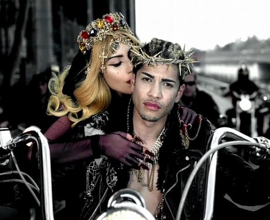
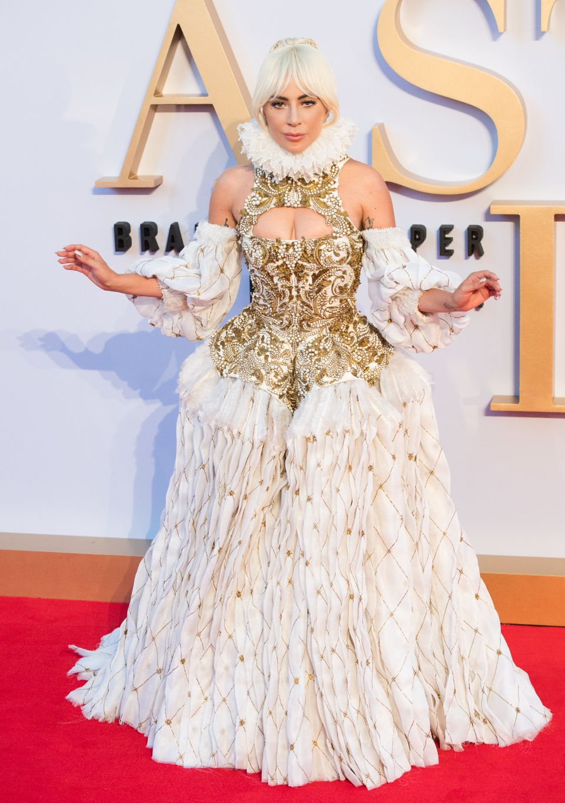
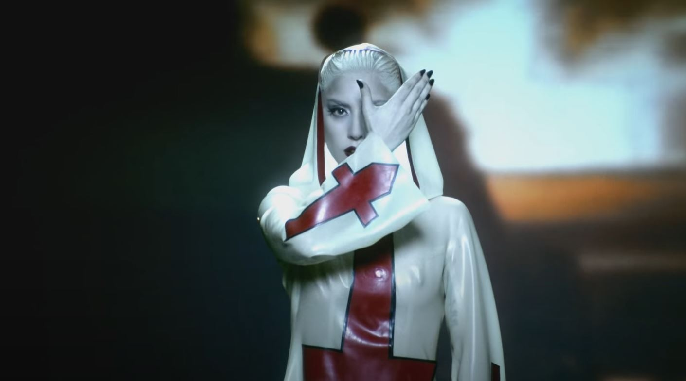
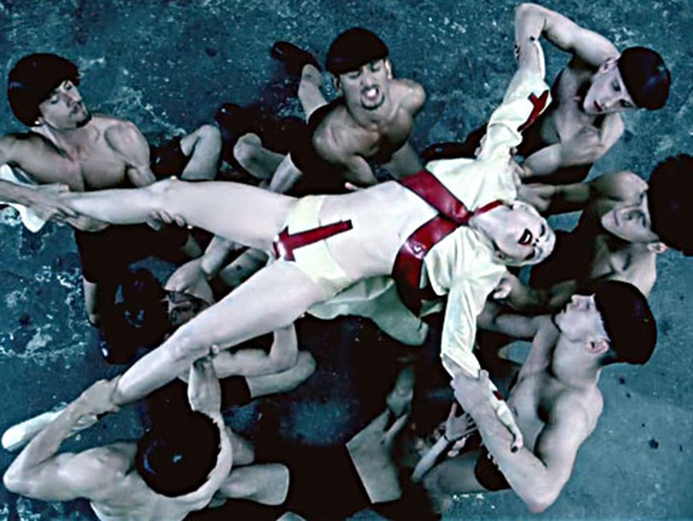

-
Catholicism as Performance
Lady Gaga's music videos and live performances are visually excessive, eye-catching, and often overtly religious in symbolism.
-
Controversy
This use of religious symbols in secular and occcasionally sexual contexts has generated significant public and religious controversy.
-
Personal Faith & Religious Reactions
A self-identified Catholic, Lady Gaga is open about her faith beyond her public persona.
Catholicism as Performance

Portrayals of Jesus
In her music video for "Judas", Lady Gaga portrays not only Judas, but also Jesus as members
of a rowdy biker gang vying for her heart. This portrayal of Jesus with all the accompanying
religious iconography led to outrage amongst some Catholic viewers.
Seen here, she portrays Jesus with a stylized, golden crown of thorns.
In her 2011 interview with the Guardian, Gaga states that "What matters is there was a time – I'm going to cry – when nobody knew who we were, and all we had was each other and we only created for each other, because it made us happy, and now that the whole world is watching, we're still doing the same thing. So, no, I didn't pop out of nowhere and become a pop singer. It's been a very real and arduous journey through Judas all the way to Jesus." This dichotomy of Judas and Jesus is never as clear as in the lyrics of "Judas" as she sings "Jesus is my virtue / And Judas is the demon I cling to, I cling to"
This is not her only song featuring references to Jesus but due to the attention surrounding the video, it was certainly the most debated. Other songs like "Bloody Mary" use the crucifixion as inspiration for lyrics. Lyrics such as "When Punk-tius comes to kill the King upon his throne" allude to Pontius Pilate and the chorus repeats "I won't cry for you / I won't crucify the things you do / I won't cry for you / See, when you're gone, I'll still be Bloody Mary" in reference to both the crucifixion and Mary Magdelane.
In her 2011 interview with the Guardian, Gaga states that "What matters is there was a time – I'm going to cry – when nobody knew who we were, and all we had was each other and we only created for each other, because it made us happy, and now that the whole world is watching, we're still doing the same thing. So, no, I didn't pop out of nowhere and become a pop singer. It's been a very real and arduous journey through Judas all the way to Jesus." This dichotomy of Judas and Jesus is never as clear as in the lyrics of "Judas" as she sings "Jesus is my virtue / And Judas is the demon I cling to, I cling to"
This is not her only song featuring references to Jesus but due to the attention surrounding the video, it was certainly the most debated. Other songs like "Bloody Mary" use the crucifixion as inspiration for lyrics. Lyrics such as "When Punk-tius comes to kill the King upon his throne" allude to Pontius Pilate and the chorus repeats "I won't cry for you / I won't crucify the things you do / I won't cry for you / See, when you're gone, I'll still be Bloody Mary" in reference to both the crucifixion and Mary Magdelane.

The song compares Jesus to classic fashion with lyrics like "Jesus is the new black" and "Amen, on the runway"
Fashion & Religion
The song compares Jesus to classic fashion with lyrics like "Jesus is the new black" and "Amen, on the runway"

Fame
“Now she is the biggest music star in the world. Nobody is quite sure how she did it, least of all her. What's more, she doesn't seem to have gained fans so much as followers." - 2011 Guardian Interview
Judas Music Video
"When he calls to me, I am ready
I'll wash his feet with my hair if he needs
Forgive him when his tongue lies through his brain
Even after three times, he betrays me"
"I wanna love you
But something's pulling me away from you
Jesus is my virtue
And Judas is the demon I cling to, I cling to"

Religious Symbols
Image from "Judas" music video
“Thus, while the communitarian aspect contributes to a reasonable degree of stability, the successive interpretation and re-reading of the symbol, a process that includes the possibility of its mixing and amalgamating with other symbols, makes it possible for the symbol to be flexible. This has allowed us to not only access, perceive, communicate, but also, to a considerable extent, to shape the reality we live in”
-Adrian-Mario Gellel in "Metaphors and Symbols in Popular Music as Exemplified in Katy Perry's Music and Music Videos" page 12

“Lady Gaga makes a conscious and strategic use of symbols, metaphors, and life experiences which she draws from a vast repertoire of cultural and symbolic baggage. She strategically chooses to employ religious symbols derived from myth, and those developed by pop culture during these past years, mostly through theatre, music, art, and fashion. The strategy is further enhanced by her ability to point to the potential of her work as symbolic resources for individuals. That is, she points to her audience that the symbols that she makes available to them may be used to generate meaning”
-Adrian-Mario Gellel in "Metaphors and Symbols in Popular Music as Exemplified in Katy Perry's Music and Music Videos" page 12
Cross in Fashion
Image from "Alejandro" music video
“Lady Gaga makes a conscious and strategic use of symbols, metaphors, and life experiences which she draws from a vast repertoire of cultural and symbolic baggage. She strategically chooses to employ religious symbols derived from myth, and those developed by pop culture during these past years, mostly through theatre, music, art, and fashion. The strategy is further enhanced by her ability to point to the potential of her work as symbolic resources for individuals. That is, she points to her audience that the symbols that she makes available to them may be used to generate meaning”
-Adrian-Mario Gellel in "Metaphors and Symbols in Popular Music as Exemplified in Katy Perry's Music and Music Videos" page 12

Catholicism & Sexuality

The Rosary in "Alejandro" Video

Performance & Religion
In Billboard’s track by track music review of Born This Way, the religious impact of “Judas” is minimized, as they write “Calm down folks, it's just a bad boy metaphor, not religious commentary” (Source). However, Gaga does not simply use Judas and the disciples as props for the video but incorporates this biblical story of betrayal and good versus evil into the song and her discussions of her faith and personal life.
×

Image Text
Controversy
Westboro Baptist Church
A sign seen at a Westboro Baptist Church protest (date unknown)
Indonesian Protests
Indonesian Islamic hardliners stage a protest against Lady Gaga in Jakarta.
Full Article

Fox News Article
Full Fox Article
“Lady Gaga’s faith confounds a popular narrative of religion in America. She is considered both a practicing Christian and a passionate advocate for progressive values. She simply doesn’t fit in the controlling narrative, endorsed by both the secular left and the religious right, that relegates religion be the sole domain of social conservatism.” (Graves-Fitzsimmons)
Full Quote Article
Protest
A member of Biblemode Youth Philippines holds up banners during a protest against Lady Gaga in Manila (2012)
“This protest is not against Lady Gaga as a person but on her music and on how she declares distorted views about the Lord Jesus Christ” - Reuben Abante (secretary-general of Biblemode Youth)
Full Article

Devil
Performance of "Bad Romance" on the X Factor (2009)
"We are not just "celebrities" we are humans and sinners, children, and our lives are not void of values because we struggle. We are as equally forgiven as our neighbor. God is never a trend no matter who the believer."
Quote Source
Habit
2010 Lollapalooza performance
Lady Gaga’s use of religious symbols in secular and often sexual contexts has generated significant public controversy and sparked debates over Catholic authority and modernity. Her incorporation of symbols such as the cross, rosary, nun’s habit, and crown of thorns into her seemingly secular, progressive art has been called blasphemous or even heretical. These critiques have come both from conservative religious groups and Catholic figures of authority.
Catholic League Response
This 2011 article by the Catholic League demonstrates the reaction of many Catholics news outlets to Lady Gaga's use of religious, and specifically Catholic symbolism in her work.
Full Article
Religious reactions to Lady Gaga’s music demonstrate that “as conventional religious groups interact with popular culture in these ways—through representation in the media, adoption of its techniques, and rejection of its production—the dividing line between religion and popular culture blurs” (Chidester 32). While groups such as the Catholic League fight to keep religion apart from culture, it is an increasingly futile task. As they interact with Lady Gaga’s use of religion in popular media, religious groups delve further into the space they claim to condemn.
Personal Faith & Religious Reactions

The Institution of Relgion
"Don't say I hate institutionalised religion – rather than saying I hate those things, which I do not, what I'm saying is that perhaps there is a way of opening more doors, rather than closing so many." -Lady Gaga Quoted in 2011 Guardian Interview

Religious Acceptance
Clackamas United Church of Christ sign (2019)
“Her prayer is the same as countless progressive Christians who recoil at the hypocritical judgment of fundamentalism yet still seek to follow Jesus. She prays to an affirming God with expansive love, not a narrow-minded magician in the sky who damns nonbelievers to eternal conscious torment.” (Graves-Fitzsimmons)
Full Article
Addressing Mike Pence's stances on LGBTQ+ issues, Gaga stated:
"You said we should not discriminate against Christianity. You are the worst representation of what it means to be a Christian. I am a Christian woman, and what I do know about Christianity is that we bear no prejudice and everybody is welcome. So you can take all that disgrace Mr. Pence and you can look yourself in the mirror and you’ll find it right there."
Full Article

Personal Relationship with Prayer
"I bow down to pray
I try to make the worst seem better
Lord, show me the way"

Lady Gaga as a Religious Authority
Lady Gaga meets the Dalai Lama in 2016
"No, but it does put me in an interesting position as an artist whose fan base is commercial and widening. If you were to ask me what I want to do, I don't want to be a celebrity, I want to make a difference. I never wanted to look pretty on stage and sing about something we've all heard about before. I'd much rather write a song called Judas and talk about betrayal and forgiveness and feeling misunderstood, and talk to the fans and figure out what it is society needs. If I can be a leader, I will." -Lady Gaga quoted in 2011 Guardian Interview
Religious Acceptance
Maplewood United Church of Christ in the suburbs of St. Louis displayed this sign in 2011, referencing Gaga's "Born This Way" and expressing a message of religious acceptance.
"I'm beautiful in my way
'Cause God makes no mistakes
I'm on the right track, baby
I was born this way"
"For you created my inmost being; you knit me together in my mother's womb.
I praise you because I am fearfully and wonderfully made; your works are wonderful, I know that full well."
Psalm 139:13-14
Church
Lady Gaga photographed visiting church service at Grandview United Methodist Church in Lancaster Pennsylvania (2014).
"But in the end, the best way to approach such flirtations with Catholicism may be not to consider whether they are offensive, but to ask whether the artist is using them purely for effect or as part of a personal dialogue. Gaga is no longer a practicing Catholic, but she does profess a Christian faith. For this reason, and also because her album is so fiercely passionate, preaching honest self-expression ardently if somewhat heretically, it seems clear that Gaga still cares about her God."
Full Article
Back to Top